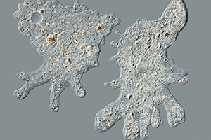
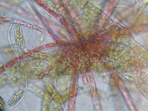
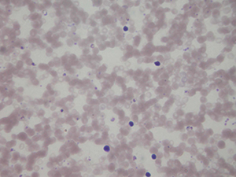
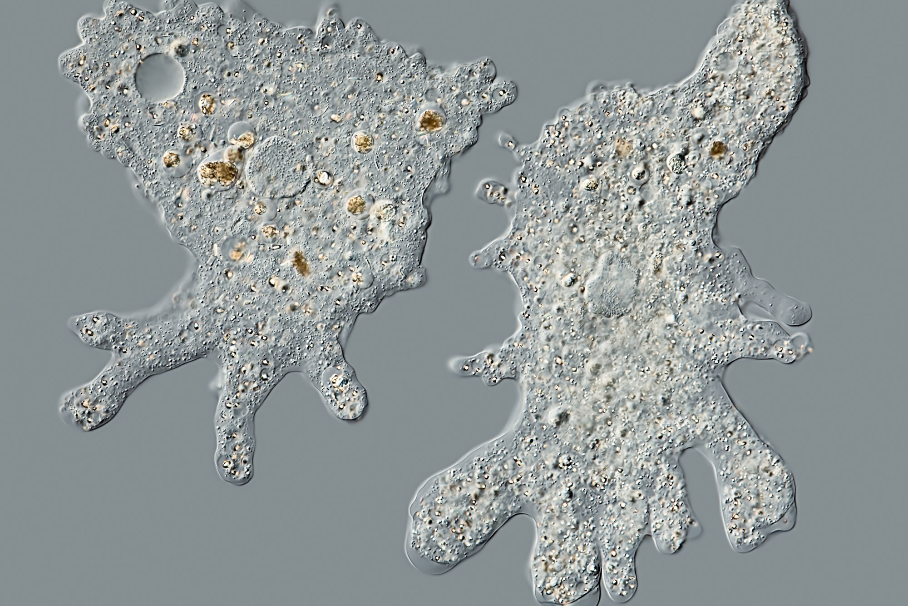
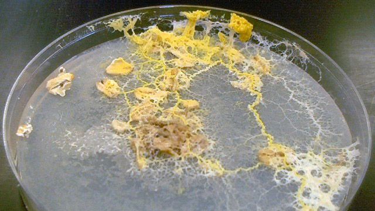
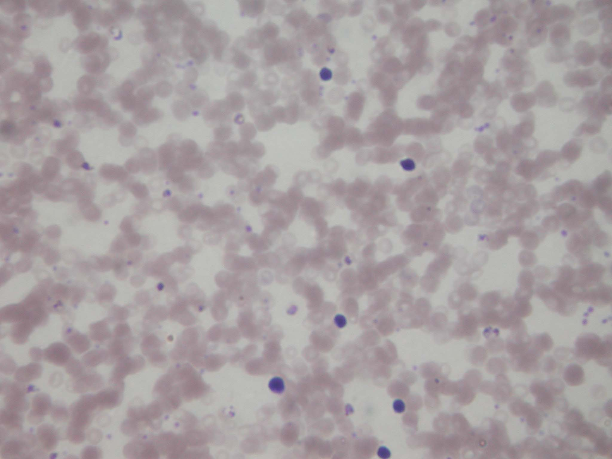

Makhluk hidup dalam Kingdom Protista adalah organisme eukariota yang sebagian besar unicell, yaitu makhluk hidup ber-sel tunggal yang selnya memiliki membran inti. Sistem klasifikasi ini pertama kali dirintis oleh Ernst Haeckel (1834-1919). Organisme yang termasuk Protista adalah Protozoa, Algae, dan Myxomicota. Adapun ciri-ciri organisme Protista, yaitu:
Merupakan organisme Eukariotik atau mempunyai membran inti.
Sebagian besar merupakan organisme Unicell atau terdiri dari sel tunggal.
Sebagian kecil merupakan organisme Multicell atau terdiri dari banyak sel, seperti Algae.
Sebagian besar protista hidup di air, beberapa di tanah lembab atau bahkan tubuh manusia dan tanaman.
Mereka memiliki mitokondria untuk respirasi sel dan beberapa memiliki kloroplas untuk fotosintesis.
Gerakan organisme menggunakan flagela atau silia.
Protista bukan tanaman, hewan atau jamur.
Berkembang biak dengan mitosis dan beberapa mampu meiosis untuk reproduksi seksual.
Protista adalah komponen utama plankton
Protista dapat menjadi heterotrofik atau autotrofik.
Tahukah kamu apakah itu yang dimaksud heterotrofik dan autotrofik?
Klik disini deh kalau kepo :D
Yang dimaksud dengan heterotrofik adalah organisme yang tidak mampu menghasilkan makanannya sendiri sehingga hidup dengan memakan organisme lain. Sedangkan autotrofik adalah organisme yang mampu menghasilkan makanannya sendiri.... WOW!! Nah nambah ilmu kan? dilanjutkan yuk mengenal lebih jauh apa sih itu organisme Protozoa, Algae dan Myxomicota. Silahkan pilih menu di sebelah kanan ya.
Protozoa
Protozoa (Latin, proto = pertama, zoa/zoon = binatang) adalah Protista yang mirip hewan, selain itu organisme ini hanya tersusun atas satu sel dan merupakan penyusun utama zooplankton/plankton yang berada di perairan. Bentuknya masih terdiri dari sel tunggal sehingga berukuran mikroskopis atau kurang dari satu milimeter.
Berdasarkan struktur alat geraknya, Protozoa dapat dikelompokkan menjadi empat sebagai berikut:
Rhizopoda,
Yaitu Protozoa yang bergerak dengan kaki semu (pseudopodia) yang merupakan penjuluran protoplasma sel, yang berfungsi sebagai alat penangkap mangsa. Hidup di air tawar, air laut, tempat-tempat basah, dan sebagian ada yang hidup dalam tubuh hewan atau manusia. Perkembangbiakan secara aseksual melalui pembelahan biner dan pembentukkan kista. Jenis yang paling mudah diamati adalah Amoeba.
Flagellata,
Yaitu Protozoa yang bergerak dengan bulu cambuk (flagel) yang digunakan juga sebagai alat indera dan alat bantu untuk menangkap makanan. Selain itu jenis ini juga dibedakan menjadi jenis fitoflagellata contohnya Euglena dan zooflagellata contohnya Trypanosoma.
Cilliata,
Yaitu Protozoa yang bergerak dengan bulu getar (silia) yang digunakan juga sebagai alat gerak dan mencari makanan. Ukuran silia lebih pendek dari flagel, contohnya Paramaecium Caudatum, Stentor, Didinium.
Apicomplexa / Sporozoa,
Yaitu Protozoa yang berbentuk bulat atau bulat panjang dan tidak memiliki alat gerak khusus, menghasilkan spora (sporozoid) sebagai cara perkembangbiakannya. Makanannya langsung diperoleh dari inang tempat hidupnya, sehingga semua golongan Apicomplexa/Sporozoa ini adalah endoparasit, contohnya Plasmodium yaitu penyebab penyakit malaria.
Algae
Algae dalam bahasa Latin yang berarti Ganggang/Alga atau bisa juga Rumput Laut termasuk Protista yang mirip tumbuhan. Organisme ini bersifat fotoautotrof karena memiliki klorofil atau plastida yang berisi berbagai pigmen fotosintetik lainnya. Ganggang mudah ditemukan dilingkungan perairan, baik di air tawar maupun di air laut. Ada yang hidup menempel di suatu tempat atau melayang-layang di dalam air. Ganggang menyebabkan air danau, air sawah, air kolam, atau akuarium tampak berwarna hijau. Namun, masyarakat sering keliru menyebutnya dengan lumut. Ganggang berbeda lumut. Lumut tidak terendam air, sedangkan ganggang hidup dalam air. Bila dipegang, lumut terasa seperti beludru dan lebih kering, sedangkan ganggang terasa basah, licin atau berlendir.
Berdasarkan warna zat / pigmen, Algae dapat dikelompokkan menjadi enam sebagai berikut:
Chlorophyta (Algae Hijau),
Alga ini merupakan kelompok alga yang paling beragam karena ada yang bersel tunggal dan bersel banyak. Pigmen yang dimilikinya adalah klorofil yang mengandung karoten. Banyak terdapat di danau, kolam tetapi sebagian ada juga yang hidup di laut. Contoh: Chlorococcum, Chlorella, Hydrodictyon dan Volvox.
Phaeophyta (Algae Coklat),
Alga coklat ini tubuhnya menyerupai tumbuhan yang memiliki pigmen berupa xantofil, fukosantin, klorofil a dan c. Habitatnya berada di dasar laut, reproduksi secara metagenesis (pergantian keturunan antara vegetatif dan generatif). Contoh: Sargassum, Fucus, Turbinaria dan Macrocystis.
Rhodophyta (Algae Merah),
Alga merah ini memiliki bentuk tubuh seperti rumput sehingga disebut dengan rumput laut. Tubuh bersel banyak bentuk seperti lembaran. Warna merah karena mengandung pigmen fikoeritrin. Alga ini berkembang biak dengan reproduksi seksual melalui peleburan antara spermatozoid dan ovum menghasilkan zigot. Contoh: Euchemma Spinosum, Gelidium, Rhodymenia dan Scinata.
Chrysophyta (Algae Keemasan),
Alga keemasan ini sering disebut klep yang merupakan protista laut terbesar dan paling rumit. Berwarna kecoklatan karena memiliki pigmen yang dominan fikosantin daripada karoten dan xantofil. Contoh: Diatom, Navicula, Cyclotella dan Pinnularia
Phyrrophyta (Algae Api),
Algae ini disebut ganggang api karena mampu memancarkan cahaya (bioluminesens) pada kondisi gelap. Hidup di air laut dan ada yang di air tawar, sering disebut dinoflagellata karena memiliki 2 flagel. Selain itu memiliki pigmen berupa klorofil a dan c. Contoh : Noctiluca, Ceratium, Gonyaulax dan Perridium.
Euglenophyta,
Algae ini merupakan kelompok protista yang unik karena dia memiliki sifat mirip tumbuhan dan hewan. Dianggap mirip tumbuhan karena memiliki klorofil a dan b, juga ditemukan karotin sehingga dia akan berfotosintesis. Tetapi juga dianggap mirip hewan karena dapat bergerak aktif dengan pertolongan satu atau beberapa bulu cambuk (flagela) yang keluar dari selnya. Karena mempunyai alat gerak, dia dapat hidup di perairan, misalnya air tawar dan air tergenang. Contoh: Euglena Viridis.
Myxomicota
Organisme Myxcomicota atau Jamur Lendir merupakan protista yang menyerupai jamur, mempunyai struktur tubuh dan cara reproduksi yang tidak sama dengan Kingdom Fungi. Cara reproduksi jamur lendir hampir sama dengan Fungi, tetapi tidak dapat dikelompokkan dalam kingdom Fungi karena gerakan pada fase aseksualnya lebih mirip dengan Amoeba. Semetara itu, jamur lendir ini lebih menyerupai ganggang pada struktur molekulnya, hanya saja tidak mengandung klorofil. Selain itu ada beberapa jenis yang hampir mirip dengan organisme Myxomicota yaitu Oomycota atau jamur air.
Berdasarkan susunan tubuh, Myxomicota dapat dikelompokkan menjadi dua golongan sebagai Acrasiomycota (Jamur Lendir Bersekat), dan Myxomycota (Jamur Lendir Tidak Bersekat).
Gallery Foto & Video
Klik gambar dibawah ini untuk membaca deskripsi lebih lanjut

Amoeba
Adalah Protozoa atau organisme Protista mirip Animalia (hewan). Termasuk Rizhopoda karena bergerak menggunakan kaki semu.
Physarum Polycephalum
Adalah Myxomicota atau Protista mirip Fungi (jamur).

Rhodophyta
Adalah Algae atau organisme Protista mirip Plantae (tumbuhan).

Plasmodium
Adalah Sporozoa atau organisme Protista yang tidak memiliki alat gerak dan bersifat parasit.
Amoeba
Dalam foto ini adalah organisme Amoeba, makhluk hidup ini bukan termasuk jamur, bakteri, hewan ataupun tumbuhan.

Myxomicota / Jamur Lendir
Dalam foto ini merupakan bentuk bakteri e-Collie ataupun organisme Monera pada umumnya. Bakteri ini berada dalam sistem pencernaan manusia di usus buntu berguna sebagai pembusukan sisa-sisa makanan.

Rhodophyta / Algae Merah
Ini adalah salah satu contoh foto ganggang merah yang diperbesar menggunakan mikroskop yang diperbesar ratusan kali. Dalam foto ini terlihat algae lebih mirip organisme primitif karena bentuknya yang mikroskopis.
Plasmodium
Foto ini adalah Plasmodium yaitu salah satu organisme yang bersifat endoparasit, bisa juga disebut dengan Apicomplexa.

Gunakan Tombol Arah Pada Keyboard
Mini Games
Nah ini ada commercial break untuk menyegarkan otak agar kamu semangat belajar lagi. Game ini mengibaratkan kamu adalah sebuah Protozoa yang saling berkompetisi memangsa organisme lainnya. Klik disini deh untuk mulai main.